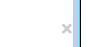
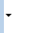

bootstrap还提供了一些小的工具类，这次实验就让我们一起来学习吧
通过使用一个象征关闭的图标，可以用来让模式对话框和警告框消失。
<button type="button" class="close" aria-hidden="true">×</button>

使用插入符表示下拉的功能和方向。请注意，默认插入符会自动反转在 dropup 菜单。
<span class="caret"></span>

过这两个 class 让页面元素左右浮动。 !important 被用来避免某些问题。也可以像 mixin 一样使用这两个 class。
<div class="pull-left">...</div>
<div class="pull-right">...</div>
// Classes
.pull-left {
float: left !important;
}
.pull-right {
float: right !important;
}
// Usage as mixins
.element {
.pull-left();
}
.another-element {
.pull-right();
}
不要用于导航条
如果是用于对齐导航条上的组件，请务必使用.navbar-left 或 .navbar-right。查看导航条文档以获取详情。
将页面元素设置为 display: block 并通过设置 margin 使其居中。可以作为 mixin 或 class 使用。
<div class="center-block">...</div>
// 作为 classe 使用
.center-block {
display: block;
margin-left: auto;
margin-right: auto;
}
// 作为 mixin 使用
.element {
.center-block();
}
使用.clearfix 清除任意页面元素的浮动。我们使用了 Nicolas Gallagher 的 the micro clearfix。也可以像 mixin 一样使用。
<div class="clearfix">...</div>
// Mixin itself
.clearfix() {
&:before,
&:after {
content: " ";
display: table;
}
&:after {
clear: both;
}
}
// Usage as a Mixin
.element {
.clearfix();
}
通过.show 和 .hidden 可以强制显示或隐藏任一页面元素（包括在屏幕阅读器上）。这两个 class 使用了!important 以避免冲突。这两个 class 只能做用于块级元素，也可以作为 mixin 使用。
.hide 仍然可以用，但是它不能影响屏幕阅读器，并且从 v3.0.1 版本开始已将被标记为不建议使用。请使用.hidden 或 .sr-only。
此外，可以使用.invisible 切换只有一个元素的可见性，这意味着它的显示不被修改，仍然可以影响文档流中的元素。
<div class="show">...</div>
<div class="hidden">...</div>
// Classes
.show {
display: block !important;
}
.hidden {
display: none !important;
visibility: hidden !important;
}
.invisible {
visibility: hidden;
}
// Usage as mixins
.element {
.show();
}
.another-element {
.hidden();
}
使用.sr-only 可以针对除了屏幕阅读器之外的所有设备隐藏一个元素。此 class 还可以作为 mixin 使用。
<a class="sr-only" href="#content">Skip to main content</a>
// Usage as a Mixin
.skip-navigation {
.sr-only();
}
使用.text-hide class（也可作为 mixin 使用）可以将页面元素所包含的文本内容替换为背景图。
<h1 class="text-hide">Custom heading</h1>
// Usage as a Mixin
.heading {
.text-hide();
}